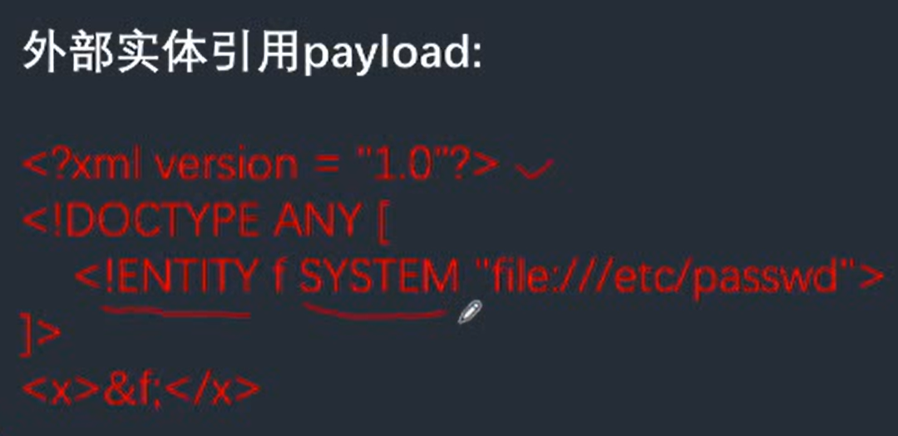

XXE
- XML声明
<?xml version = "1.0"?>- 文档类型定义DTD
<!DOCTYPE note [ <!--定义此文档是note类型的文档-->
<!ENTITY entity-name SYSTEM "URL/URL"> <!--外部实体声明-->
]>- 文档元素
<note>
<to>Dave</to>
<from>Tom</from>
<head>Reminder</head>
<body>You are a good man</body>
</note>- DTD:Document Type Definition 文档类型定义，用来为XML文档定义语义约束。
- DTD内部声明
<!DOCTYPE 根元素 [元素声明]>- DTD外部引用
<!DOCTYPE 根元素名称 SYSTEM "外部DTD的URI">- 引用公共DTD
<!DOCTYPE 根元素名称 PUBLIC "DTD标识名" "公用DTD的URI">
外部引用可以支持http,file,ftp等协议
如果一个接口支持接收xmI数据，且没有对xml数据做任何安全上的措施，就可能导致XXE漏洞
- simplexml_load_string() 函数转换形式良好的XML 字符串为 SimpleXMLElement对象 在PHP里面解析xml用的是libxml,其在≥2.9.0的版本中,默认是禁止解析xml外部实体内容的。 XXE漏洞发生在应用程序解析XML输入时，没有禁止外部实体的加载，导致攻击者可以构造一个恶意的XML。